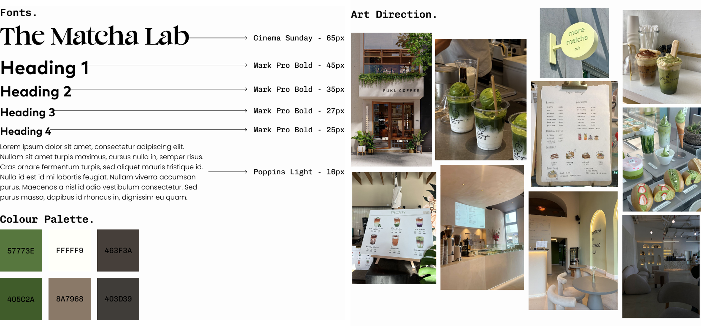
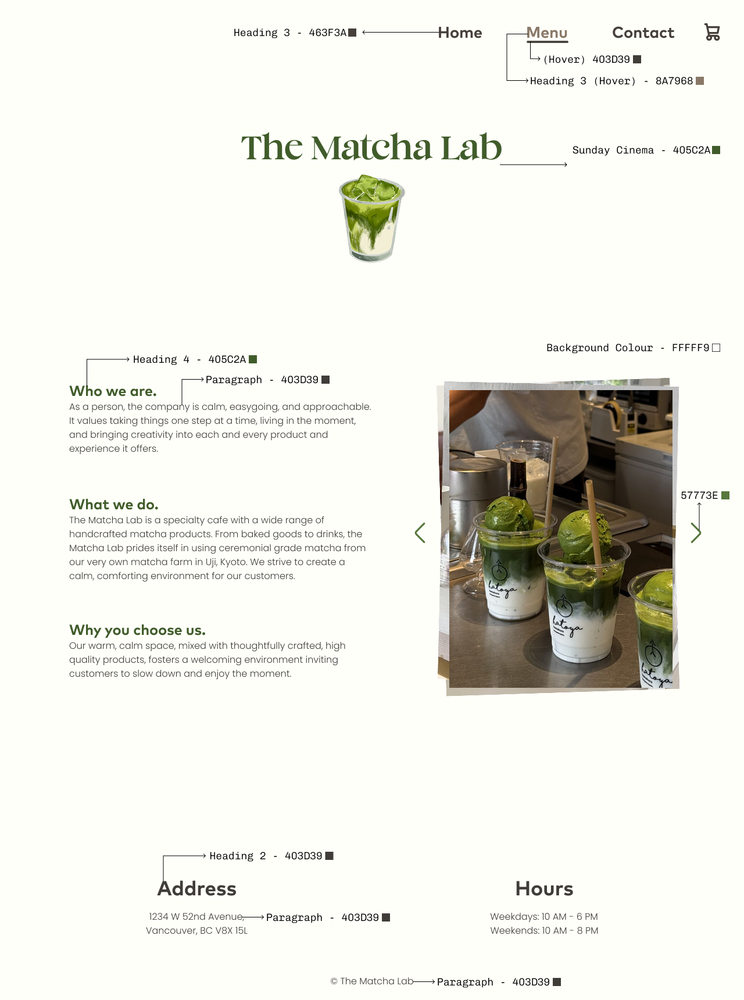
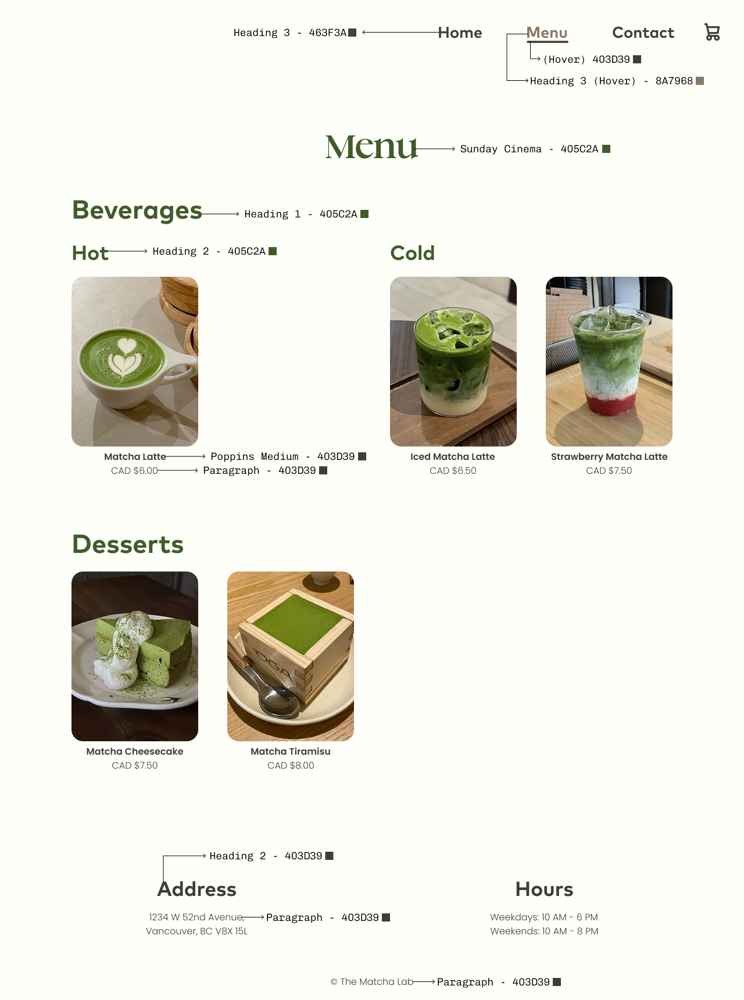
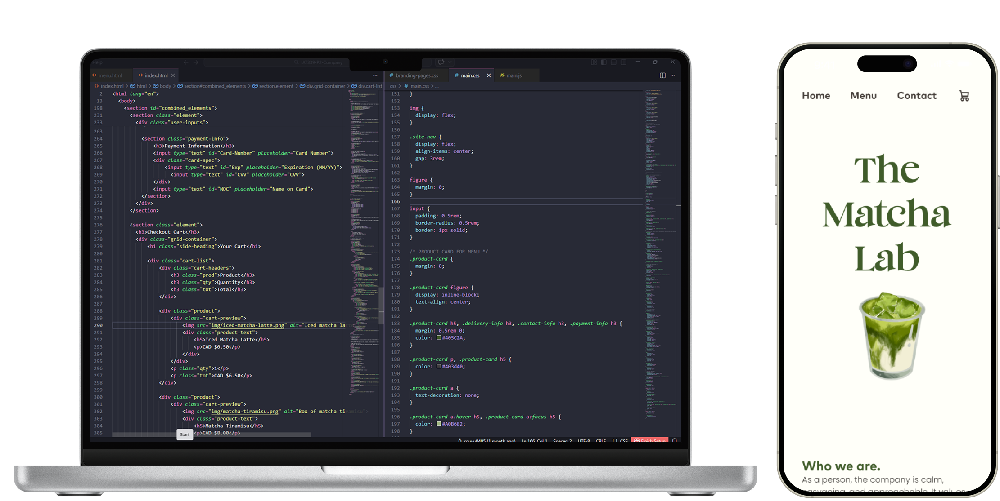
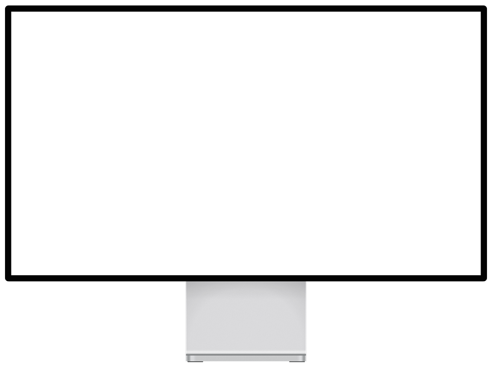

The Matcha Lab is a conceptual café brand specializing in matcha treats created for Web Design and Development (IAT 339). The project involved designing and developing a fully functional website featuring a home page with company announcements, menu, contact page, and the product purchase flow. Given two months, the project first started with individually defining a unique brand identity, followed by a collaborative effort to develop the website.
Role
Designer & Front-End Developer (1 of 2)
Tools
Figma, HTML, CSS, JavaScript, GitHub
Year
2026
The Goal
The goal in completing this project was to create a cohesive and visually pleasing digital experience for users of the site. I aimed to create an intuitive interface which allowed for easy exploration of the café’s products and a seamless, straight forward purchasing process. Additionally, I wanted to ensure a strong brand identity was developed that reflected the company goals through typography, colour, and photography.
The Process
Defining the Brand & Creating a Style Guide
To start off this project, I first began by collecting inspiration images to help establish the desired visual identity for The Matcha Lab. This included defining the cafés overall vibe, colour palette, and typography. Using these materials, I developed a detailed style guide following the atomic design methodology to ensure consistency across all pages.

User Flow
Next, I worked on mapping out a user flow to understand how people would navigate the site. Through informal user interviews with my peers in class, I identified where users tended to go and what elements drew their attention. These insights were helpful in creating a clear and intuitive layout.
Applied Branding Mockups
I then worked on creating mockups for main site pages such as the home, menu, and cart page. These helped me visualize the layout and overall structure of the page and provided guidance in the development stage. The designs focused on establishing a clear hierarchy in content, readability, and usability while ensuring a consistent design language.


Problem!
Heading into the development stage, I came across a big issue – not using a grid system from the start.
Difficult Responsiveness
Without a grid system, making the pages adapt to different screen sizes was difficult and inefficient.
Inconsistent Layout
Elements were freely placed, making it hard to maintain a consistent layout across all pages.
Inefficient Collaboration
Without a clear structure, it was difficult for us to ensure our pages were consistent with one another.
To resolve this issue, I chose to rework the layout by adding in a 12-column grid, improving the design structure and the rest of the development process. It also made the collaborative stage more efficient as the gird provided a clear structure to follow, ensuring our pages were consistent.

Development
Moving into the collaborative stage of this project, my partner and I worked on translating the mockups into a functional website using front-end development technologies such as HTML, CSS, and JavaScript. This involved building out responsive and accessible layouts to accommodate users on all devices.
Final Product

Takeaways
A key takeaway from completing this project, was understanding the role and importance of creating a clear and detailed style guide when working in a collaborative setting. In previous projects, my group and I would approach design more freely, which allowed for multiple ideas to be explored, however, once we agreed on one design direction, it would be difficult to stay consistent throughout our compositions. Through this project, I have come to recognize the importance of establishing a clear style guide early in the design process to help ensure consistency and alignment with the brands visual identity.